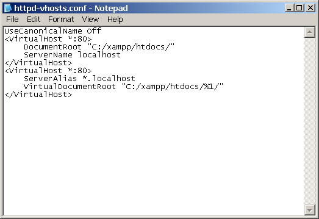
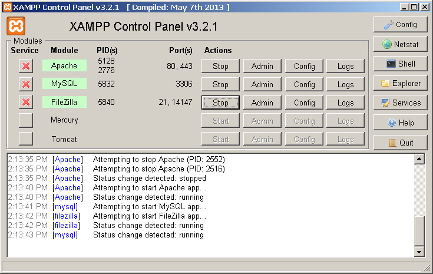
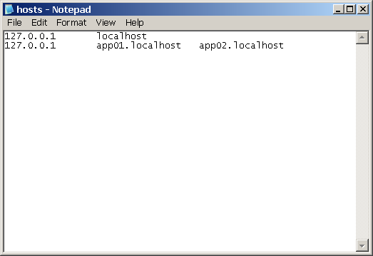
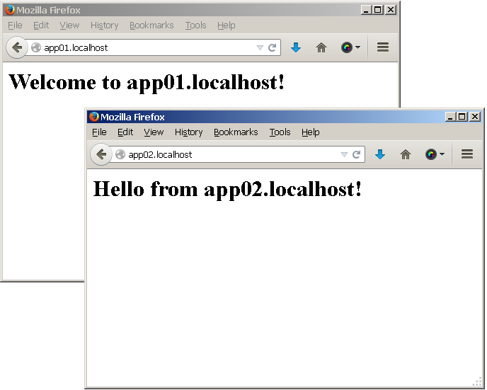

Configure Wildcard-Based Subdomains
Apache’s virtual hosting feature makes it easy to host multiple websites or web applications on the same server, each accessible with a different domain name. However, when you have a large number of virtual hosts sharing almost-identical configuration, wildcard-based subdomains simplify maintenance and reduce the effort involved in adding a new virtual host.
With wildcard subdomains, it’s no longer necessary to edit the Apache configuration file or restart the server to initialize a new virtual host. Instead, you simply need to create a subdirectory matching the subdomain name on the server with your content, and Apache will automatically use that directory to serve requests for the corresponding subdomain.
| Virtual hosts created in this manner will not be accessible from other systems, unless those systems are separately configured to associate the custom domains used by virtual hosts with the IP address of the ZAMPP server. |
This guide walks you through the process of setting up wildcard virtual hosts with ZAMPP, such that requests for subdomain.localhost are automatically served by the subdomain/ directory of the main server document root. Follow the steps below: . Change to your ZAMPP installation directory (typically, C:\xampp) and open the httpd.conf file in the apache\conf\ subdirectory using your favourite text editor. Within the file, find the following line and uncomment it by removing the hash symbol (#) at the beginning of the line.
LoadModule vhost_alias_module modules/mod_vhost_alias.so
-
Next, edit the httpd-vhosts.conf file in the apache\conf\extra\ subdirectory of your ZAMPP installation directory.
-
Replace the contents of this file with the following directives:
UseCanonicalName Off <VirtualHost *:80> DocumentRoot "C:/xampp/htdocs/" ServerName localhost </VirtualHost> <VirtualHost *:80> ServerAlias *.localhost VirtualDocumentRoot "C:/xampp/htdocs/%1/" </VirtualHost>
In this configuration, the first virtual host block configures how requests are handled by default. The second block configures wildcard virtual hosting for subdomains, such that requests for subdomain.localhost are automatically served by the subdomain\ directory of the C:\xampp\htdocs\ directory. In particular, notice the %1 placeholder, which matches the subdomain name from the request URL.
-
Restart Apache using the ZAMPP control panel for your changes to take effect.

At this point, your wildcard subdomains are configured. You can easily test this by using the Windows Explorer to create two new subdirectories at C:\xampp\htdocs\app01\ and C:\xampp\htdocs\app02\. Within each subdirectory, create a file named index.html and fill it with some sample HTML content. Use different content for each file, so that you can easily distinguish that they’re being served from different directories - for example:
<!-- index.html in app01 directory --> <html> <head></head> <body> <h1>Welcome to app01.localhost!</h1> </body> </html>
<!-- index.html in app02 directory --> <html> <head></head> <body> <h1>Hello from app02.localhost!</h1> </body> </html>
Since these domains do not actually exist in reality, you also need to map them to the local IP address. Open the file C:\windows\system32\drivers\etc\hosts in a text editor and add the following line to it:
127.0.0.1 app01.localhost app02.localhost

| You will need to do this every time you want to configure a new wildcard virtual host, because the Windows hosts file does not support wildcard entries. To avoid this step, you can use a DNS server or local DNS proxy that supports wildcards and therefore takes care of automatically resolving requests for *.localhost to the local IP address. |
| On some versions of Windows, you will not be able to edit the C:\windows\system32\drivers\etc\hosts file without administrator privileges. You can edit the file by right-clicking the Notepad icon and selected the "Run as administrator" menu option, then entering administrator credentials (if required) and clicking "OK" or "Yes" to proceed. |
At this point, you should be able to enter the URLs http://app01.localhost or http://app02.localhost in your browser’s address bar, and you should then see the corresponding HTML page.
